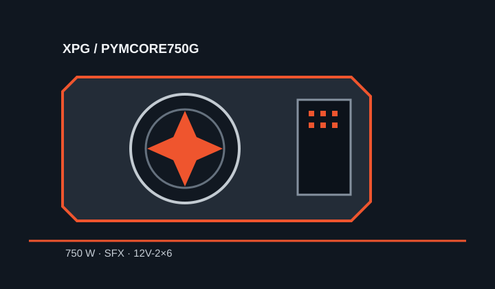

[ POWER CONVERSION // IDENTIFIED MODEL ]
XPG PYMCORE SFX 750W
Manufacturer model PYMCORE750G; country-market suffixes may follow. Verify the complete label and supplied cable kit for the sales region.

HIGH-VOLTAGE SAFETY: Disconnect mains for external inspection. Never open or probe the PSU.
Verified model specifications
| Model / rated output | XPG PYMCORE SFX 750W, model PYMCORE750G; 750 W total. |
|---|---|
| Form factor / dimensions | SFX; 125 × 100 × 63.5 mm (length × width × height). Product family supports an SFX-to-ATX bracket. |
| DC output rails | +12 V: 62.4 A / 748.8 W; 750 W total rated output. The cited manufacturer material establishes the +12 V rating; other rail or combined ceilings are not asserted here. |
| Efficiency claim | 80 PLUS Gold and Cybenetics Platinum certifications are identified in XPG's manufacturer datasheet. |
| Cable-end connector counts | Fully modular: motherboard 20+4-pin ×1; CPU 4+4-pin ×2; 12V-2×6 ×1; PCIe 6+2-pin ×2; SATA ×6; Molex ×2. |
| Revision and cable cautions | Market suffixes differ. Match the full product code, regional nameplate and cable inventory. Modular cable-side pinouts are not universal; use only supplied XPG leads or a replacement explicitly approved for this exact SKU/revision. |
Compatibility & safe installation
- Confirm SFX dimensions, mounting, ventilation and connector bend clearance. The 12V-2×6 plug requires unobstructed seating and routing compatible with the GPU and chassis.
- Validate system load, +12 V draw, connector type and regional AC details against the matching manual and physical unit label.
- Do not reuse modular leads from other XPG/ADATA power supplies based on brand or connector shape.
- Never open or electrically probe the PSU.
Manufacturer sources
- XPG PYMCORE SFX 750W datasheetManufacturer model, dimensions, rated output, efficiency certifications and feature data.
- XPG PYMCORE quick-start guideManufacturer installation guide and cable/connector information.